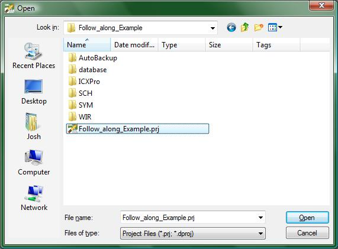
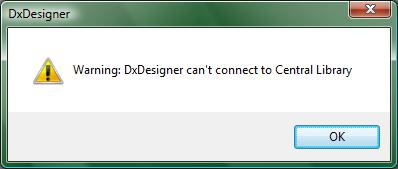
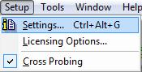
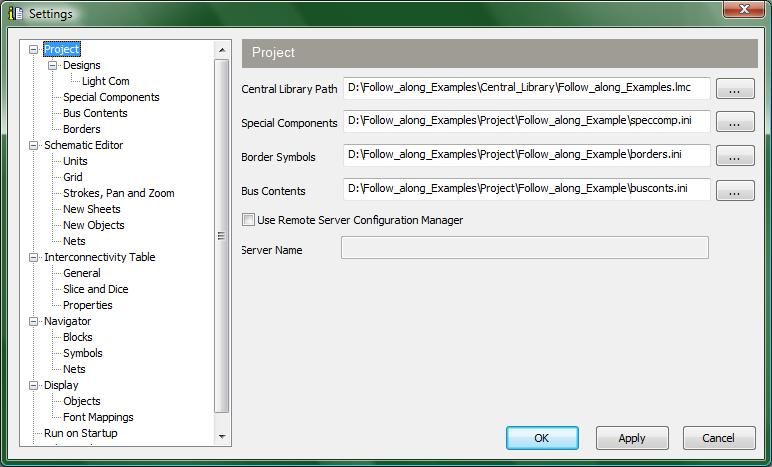

Importing a project from another
Machine:
If you ever find yourself needing to take a project you have created to another computer, this is the tutorial for you. You may also need this tutorial if you want to import projects we have provided for you on other tutorials.
Students in the class ECE189 at UCSB should not need to
worry about this too much because they should make a folder in their
home directory --- (not on the C: drive) ---
to store both the project-specific central library and the rest
of the project files there. The home directory
will be automatically mounted as a drive (normally the Z: drive) and this
happens without regard to which Digilab computer has been used.
To make this tutorial a little bit more interactive, please download a copy of a project we have created.
The link provided here is merely the project used with our Easybus tutorial.
For those who want a quick overview of the steps taken, see the list below. For those of you who wish to follow along and do each step with screenshots and explanations, then continue reading after the numbered list.
Now to actually show you how all of the above steps are done. Lets start at step 2 though shall we?

(1-open_dialog.jpg)
The previous image shows the file you will want to open up. When you click the Open button the following will happen.

(2-warning.jpg)
This warning message occurs because the project expects the Central Library to be where it was the last time the project was run in DxDesigner. The project stores the location of the Central Library as a full path and not a local one so even if the local paths did not change when you moved the project and the library, it will still have this warning. Just click the OK button and let's move on.
Click on the following menu option:

(3-settings.jpg)
This will open up the following window:

(4-settings_window.jpg)
If you look at the many fields specified for your project, you will notice that the Central Library Path is the only field that will not auto-correct itself. Merely click on the “…” button to browse for where you placed the Central Library. Once you have changed the Central Library Path to be correct then you are ready to use the project you obtained from another computer!